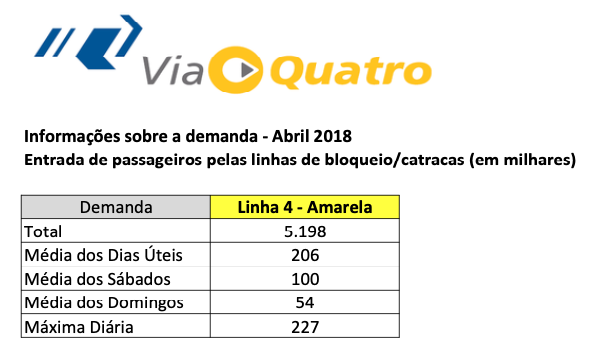
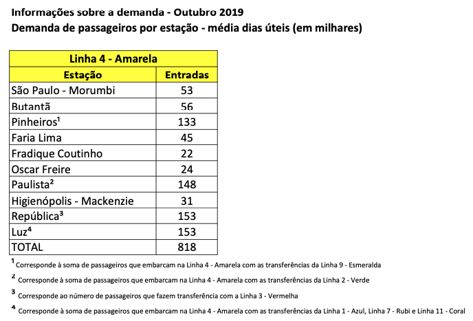
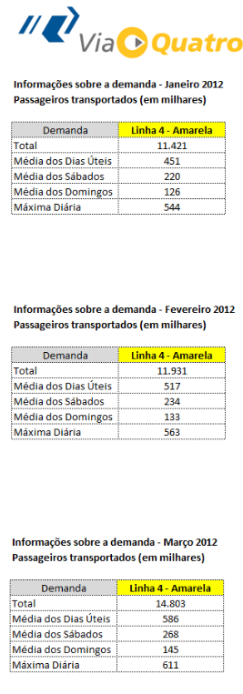

library(stringr)
library(dplyr)
library(readr)
library(tidyr)
library(purrr)Introdução
Recentemente, eu decidi coletar todos os dados de mobilidade sobre os trens e metrôs de São Paulo, publicamente disponíveis. Esta tarefa se provou mais difícil do que eu antecipava. Tradicionalmente, há duas empresas que operam o transporte sobre trilhos na Região Metropolitana: a CPTM, que maneja os trens intermunicipais, e o Metrô, que administra o metrô de São Paulo. Atualmente há também operadores privados: a ViaQuatro, que opera a linha-4 amarela do metrô; e a ViaMobilidade que opera a linha 5-Lilás do metrô e as linhas 9-Esmeralda, 15-Prata.
Os dados da mobilidade não apenas estão espalhados pela internet, como também estão em formatos diferentes. Para piorar, muitos dos arquivos estão armazenados como PFDs, mais especificamente, como imagens de tabelas salvas em arquivos PDF.
Os dados abertos da linha 4-amarela, por exemplo, estão todas na página.
Cada tabela é salva num PDF diferente. Há três informações principais: entrada de passageiros por linha; número de passageiros transportados por linha; e a entrada de passageiros por estação. Cada PDF guarda um arquivo com a tabela mensal que registra estas informações. Exceto pelos dados anteriores a 2018. Os dados anteriores a 2018 estão salvos em PDFs “anuais”, que contém todas as tabelas daquele ano. Assim o PDF de 2010 contém 12 tabelas, uma para cada mês do ano.
R
Webscrape
library(rvest)
library(xml2)Encontrando os links
url <- "https://www.viaquatro.com.br/linha-4-amarela/passageiros-transportados"
page <- read_html(url)
pdf_links <- page %>%
rvest::html_elements(xpath = "//article/ul/li/a") %>%
html_attr("href")pdf_names <- page %>%
rvest::html_elements(xpath = "//article/ul/li/a") %>%
html_attr("title")pdf_links <- pdf_links[str_detect(pdf_links, "\\.pdf$")]
params <- tibble(
link = pdf_links,
name = pdf_names
)Organizando os links
mes <- lubridate::month(1:12, label = TRUE, abbr = FALSE, locale = "pt_BR")
params <- params %>%
separate(name, into = c("variable", "x1", "x2"), sep = " - ", remove = FALSE) %>%
mutate(
year = case_when(
str_length(x1) == 4 ~ as.numeric(x1),
str_length(x2) == 4 ~ as.numeric(x2),
TRUE ~ NA
),
date = case_when(
str_detect(x1, paste(mes, collapse = "|")) ~ x1,
str_detect(x2, paste(mes, collapse = "|")) ~ x2,
TRUE ~ NA
),
date = str_trim(date),
date = str_remove(date, " de"),
ts_date = parse_date(paste(date, "01", sep = ' '), format = "%B %Y %d", locale = locale("pt")),
year = if_else(is.na(year), lubridate::year(ts_date), year)
)
params <- params |>
arrange(ts_date) |>
arrange(variable)Download de todos os PDFs
Code
#> Baixar todos os pdfs do site
#> Define a pasta onde os arquivos serão baixados
fld <- here::here("static/data/raw/metro_sp/linha_4/")
#> A 'base' da url do site
baseurl <- "https://www.viaquatro.com.br"
#> Define uma barra de progresso para acompanhar o resultado
pb <- txtProgressBar(max = nrow(params), style = 3)
#> Loop nas linhas da tabela 'params'
for (i in 1:nrow(params)) {
#> Pega a coluna 'name' da coluna atual e transforma o nome idiomático
name_file <- janitor::make_clean_names(params[["name"]][i])
#> Adiciona extensão .pdf
name_file <- paste0(name_file, ".pdf")
#> Define o path para baixar o arquivo
destfile <- here::here(fld, name_file)
#> Verifica se o arquivo já existe na pasta de destino. Caso contrário baixa o pdf.
if (file.exists(destfile)) {
message(glue::glue("File {name_file} already exists."))
i <- i + 1
} else {
#> Url para baixar o pdf
url <- paste0(baseurl, params[["link"]][i])
#> Faz o dowload do arquivo
download.file(url = url, destfile = destfile, mode = "wb", quiet = TRUE)
#> Por precaução define um breve timeout aleatório (1 seg + random)
Sys.sleep(1 + runif(1))
}
#> Atualiza a barra de progresso
setTxtProgressBar(pb, i)
}Importando PDFs
library(pdftools)

